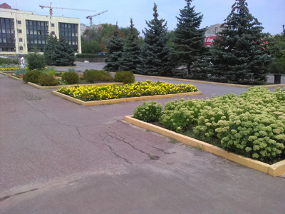
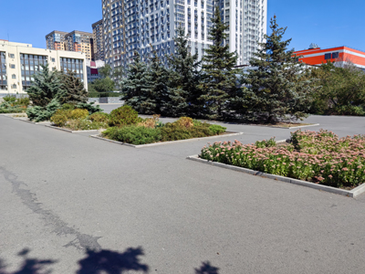

Растут сосны, растут и ЖК


В кадре часть сквера перед зданием районной администрации на бульваре Комарова. Неподалеку гипермаркет «Лента», который уже был на фото в проекте. Сквер тянется вдоль бульвара почти на весь длинный квартал. В левой части кадра видно бежевое здание — это и есть районная администрация. Слева и справа аллеи сквера заполнены в основном деревьями. А по центру сквера от здания до проезжей части расположены прямоугольные клумбы. В некоторых растут деревья, в других кустарники и цветы, которые обновляют ежегодно.
Первые фото сделаны летом 2019 года. Видно, как красиво цветут на переднем плане очитки и какие-то желтые цветочки чуть подальше. На втором фото, снятом с другого ракурса, целая композиция из неизвестных мне растений. Какие бы растения здесь не высаживали, клумбы всегда выглядят красиво. Уже ни раз делали здесь фото. Порой бывают даже довольно диковинные растения. Кстати, обе пары фотографий сделаны с одной точки, только направление в разные стороны.
Новые фото сняты в сентябре 2026 года. Очитки так и остались на своих местах. Если не видели, как цветут очитки, то рассказываю: по началу цветочные «шапочки» кажутся почти белыми, а к концу цветения они приобретают розовые и бордовые оттенки. Это на тот случай, если вам показалось, что на старых и новых фото не одно и то же растение. А вот на других клумбах растения сменились. Деревья же остались на месте и немного подросли за эти годы. Особенно на второй паре фото видно как вытянулись и опушились сосны.


Видны и другие перемены. Там, где в 2019 году было синее небо, теперь крайне «эстетичные» башни новых жилых комплексов. Новые постройки видно как на заднем плане, так и в середине. Ближние, вот эти серо-темно-серые башни и примыкающие «коробки» с оранжевыми полосками, построены на месте некогда, можно сказать, культового магазина. В прежние годы здесь было здание, на втором этаже которого располагался универсам «Северный» — один из первых крупных супермаркетов нового времени с системой самообслуживания. Да, он был еще до появления «Магнитов» и «Пятерочек». Магазин очень хороший и популярный. Но со временем все же не выдержал конкуренции и в последние лет 10-15 там был супермаркет «М.Видео». На первом раньше была «Полярная станция» — крупный боулинг-клуб, кажется, тоже один из первых в Ростове.
До сих пор иногда с ностальгией вспоминаю тот самый универсам «Северный». Правда очень хороший был магазин. Кстати, еще раньше там был тоже универсам, только советского типа, без самообслуживания и с привычными для того формата отделами. И тоже хороший. Весь район отоваривался. Помню, давным-давно мы покупали там чайные кружки с рисунком: тетерев среди кустов с ягодами. В детстве я очень любил эти кружки и долго мог разглядывать каждую линию рисунка, и до сих пор неплохо его помню. Со мной сейчас их нет, быть может, они есть у моей матери — надо спросить. Все-таки интересно, сохранились ли еще те кружки или стали частью прошлого, как когда-то и магазин, в котором их купили?